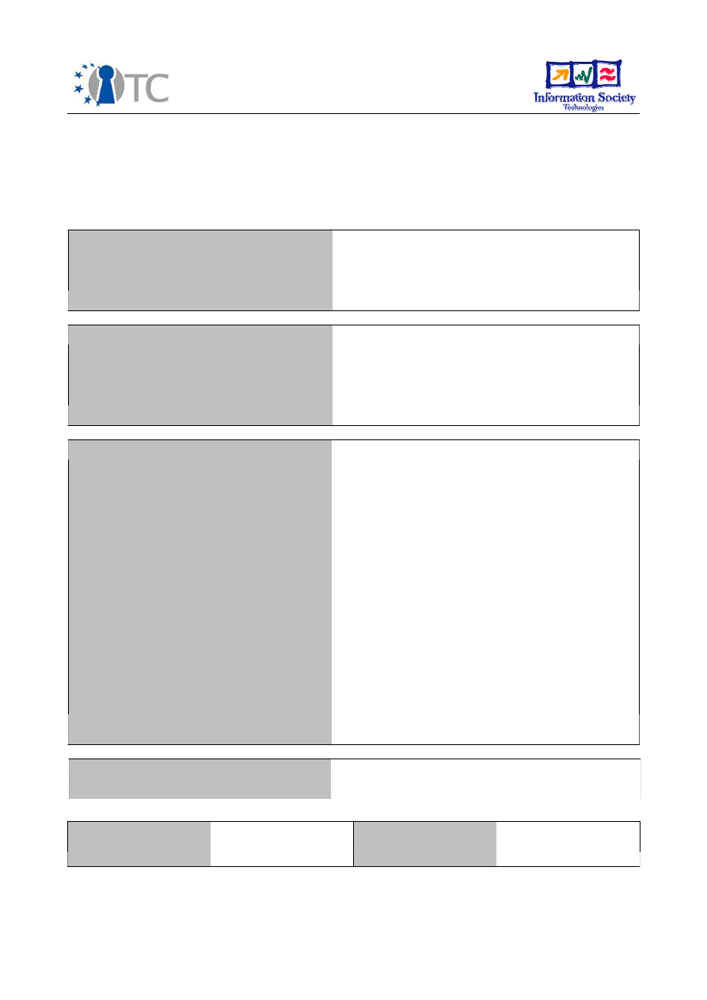
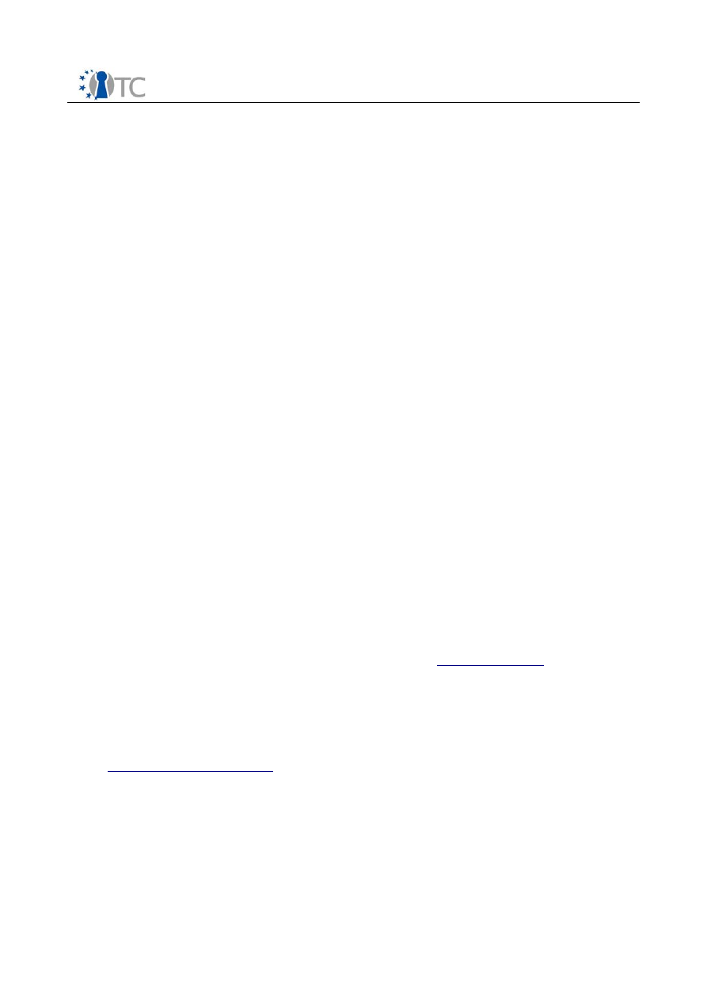

D10.2 Midterm Standardisation Report
(M18) April 2007
Project number
IST-027635
Project acronym
Open_TC
Project title
Open Trusted Computing
Deliverable type
Report
Deliverable reference number
IST-027635/D10.2/V1.0 Final
Deliverable title
Midterm Standardisation Report
WP contributing to the deliverable
WP10
Due date
Arpil 2007 (M18)
Actual submission date
June 14, 2007
Responsible Organisation
IFX
Authors
Hans Brandl
Abstract
Participating in the standardisation work of
the Trusted Computing Group (TCG) and also
other related standardisation organisations is
a main activity for the distribution and public
dissemination of the project results;
OpenTC has therefore started
standardisation work already from the
beginning of the project to become familiar
with the procedures and targets and find out
which information can be easily adapted to
standards.
Main standardisation activities during the
first 18 month concerned the TCG, JAVA,
MPEG, ETSI, OMA as described in this report.
Keywords
Standardisation, TCG, JAVA,OMA, ETSI, DRM,
MPEG
Dissemination level
Public
Revision
V1.0 Final
Instrument
IP
Start date of the
project
1
st
November 2005
Thematic Priority
IST
Duration
42 months

Midterm Standardisation Report
V1.0 Final
If you need further information, please visit our website
www.opentc.net
or contact
the coordinator:
Technikon Forschungs-und Planungsgesellschaft mbH
Richard-Wagner-Strasse 7, 9500 Villach, AUSTRIA
Tel.+43 4242 23355 –0
Fax. +43 4242 23355 –77
Email
coordination@opentc.net
The information in this document is provided “as is”, and no guarantee
or warranty is given that the information is fit for any particular purpose.
The user thereof uses the information at its sole risk and liability.
Open_TC D10.2
2/8

Midterm Standardisation Report
V1.0 Final
Table of Contents
1 Introduction...............................................................................................................4
2 Standardisation work and contribution within the Trusted Computing Group............4
2.1 Trusted Computing standardisation contributions in more detail:..........................5
3 Digital Rights management related standardisation activities...................................6
3.1 MPEG Participation.................................................................................................6
4 ETSI-Standardisation..................................................................................................7
5 Mobile phone standards.............................................................................................7
6 List of Abbreviations .................................................................................................8
Open_TC D10.2
3/8

Midterm Standardisation Report
V1.0 Final
1
Introduction
Standardisation is one of the key elements for the success of the OpenTC project,
because it is the key element for the further use and exploitation of the project
outcome. OpenTC will elaborate proposals of standards and will donate them to
relevant standardisation bodies. A strong cooperation during the project and beyond
the project time frame with the standardisation bodies is therefore necessary. The
intermediate results, gained throughout the project duration, are processed and fed
into the competent standardization bodies by the respective consortium members.
The consortium already has relations to various bodies like 3GPP, OMA, MPEG, JAVA
and TCG. Due to the activities of the TCG board members and other standardization
bodies members a tight relation to other industry developments can be ensured.
Three areas of standardisation have been identified and are targeted by the project:
–
TC orientated like within the TCG-Group
–
Infrastructure oriented, like protocols and interfaces for integrating TC into today’s
IT and security world
–
Application oriented for the enhancement of existing application fields with trust
and for the generation of new applications
OpenTC members participated in the TCG work groups for transfer of information and
announced and informed the group about the establishing of the OpenTC project and
the targets of the projects.
One technical main activity was the provision of the current activities concerning main
work at TPM and TSS standardisation for the work within WP03. The WP03 with the
basic TSS stack package was already planned and contains also elements (like the
inclusion of SOAP interface technology) together with the newest TCG standardisation
discussions.
2
Standardisation work and contribution within the Trusted
Computing Group
The Trusted Computing Group (TCG)
is the internationally accepted standardization
board which sets all relevant issues on the basic layers of our targeted activities.
Open_TC is the complementary of the TCG for building a trusted system based on
open source. It is therefore important to continuously exchange standardisation and
background information between the TCG and Open_TC. Open_TC partners are regular
members of the TCG (e.g. HP, IBM) or just joining the TCG liaison programme.
Therefore the consortium has direct access to exchange ideas and information
between the TCG and the Open_TC project.
Memberships:
The
industrial project members
(HP, IBM, AMD and IFX) where already at the start
of the project regular members of the TCG and even also members of the board of
directors of the TCG. The TCG board of directors member of IFX is also active within
OpenTC and leader of WP03. So we have a very short connection between OpenTC
and the TCG on the technical as well as the organisational and political level.
Open_TC D10.2
4/8

Midterm Standardisation Report
V1.0 Final
TCG Liaison Program
This special program of the TCG allows academic institutions, industry standards
bodies, government agencies and special interest groups with a stake in computing
security to participate in TCG Work Groups. Members in this program are anticipated
to help TCG to stay current with research, standards and concerns of other important
institutions involved in security. Liaison program members can participate in all work
groups of the TCG and influence and get first hand results from the standardisation
work.
During the first half year of the project IAIK and POLITO joined the liaison program,
RUB will join in short time; other OpenTC members are planning to follow.
2.1 Trusted Computing standardisation contributions in more detail:
a. At the beginning of the work within OpenTC it was clear that the Trusted
Software Stack (TSS) standard of the TCG (the interface between the Trusted
Platform Module (TPM) which is the elementary hardware security module and
the host software and operating system)had to be fully renewed out of new
findings, development of the state of the art and influences from other
standards. The work within WP3, namely the development of the new TSS was
therefore done in full cooperation with the current standardisation work of the
TSS working group within the TCG. The nearly stable results of the
standardisation work where immediately implemented within Workpackage
WP3.2 TSS development and on the other hand the results and implementation
feedback from WP3.1 influenced the practical formulation of the new TSS
standard in a very large manner. At the end of this development phase (M18,
which is now) we had realised a final implementation of the new TSS standard
version, which reflects as a reference implementation of the new TSS standard,
which is just now published as the new valid standard.
b. Contributions to additional language interfaces of the TSS:
- For the adaptation of the TSS to different host systems it is useful to
implement adaptation layers to existing accepted standards. Currently the
existing version contains interfacing description to the Microsoft proprietary
CAPI (crypto application interface) and the open PKCS#11 standard (also
cryptographic). As there was at the beginning of the project an existing Linux
open, general PKCS#11 implementation, Polito took over the task to realise a
specific adaptation of PKCS#11 to the requirements of trusted computing. Also
to the TSS stack (as it is structurally located at the top of the TSS stack). By this
work this implementation was also created as a reference for TSS extension in
Linux and brought it in into the public standard implementation repository.
- As the JAVA language system is now widely accepted and used within the
community and within WP4 and WP5 of the OpenTC project, and there existed
no implementation of a trusted JAVA, IAIK started work on definition and
example implementation of JAVA as an additional application interface of the
TSS. IAIK got worldwide first implementation experience for implementing a
JAVA Wrapper for TSS (which was until now used within OpenTC as functionally
management implementation of trusted OS within WP5). As this implementation
now is already working, IAIK has started to bring these results not only into the
TCG as a contribution, but also to the JAVA forum as an extension of the current
Open_TC D10.2
5/8

Midterm Standardisation Report
V1.0 Final
JAVA standard.
c. Work on the Direct Anonymous Attestation (DAA) protocol.
The DAA is a new approach for digital authentication between network
instances which extends existing standard certificate based methods (like the
well known digital public key certificate measures). DAA is an own and
recognized entity that interacts with the TPM to install a set of DAA-credentials
in the TPM. The DAA issuer provides certification that the holder of such DAA-
credentials meets some criteria defined by the Issuer. In many cases the Issuer
will be the platform manufacturer, but other entities can become issuers. As
TCG standards contain the first practical use of this DAA methods and this
technology is very new with minimal practical experience about implementation
worldwide analysis and feedback about DAA was made in WP5 mainly by IBM
and results were brought back to the TCG standardisation work.
3
Digital Rights management related standardisation activities
Digital rights implementations of TCG mechanism are expected to be one of the main
application and use fields of trusted computing solutions in the future. There is also a
large expected economical impact for the management and trading of media content
but also of securing the conditional access to and processing organisational (industrial,
governmental) and private data.
Due to some political and societal discussions, this wide field of possible use of tech-
nology was until now never been analysed and worked on in detail. As TUM/LDV has a
broad background in working on such DRM oriented standard they made large contri-
butions to the use of TC technology for protecting media rights.
Media coding standards including security features (MPEG-4 and MPEG-21 REL, RDD,
IPMP), which facilitate the development of interoperable DRM is a topic covered by
Technical University Munich (LDV).
3.1 MPEG Participation
The LDV participated in the MPEG standardisation work to promote the Open Release
MAF and especially in two main standardisation meetings:
76
th
MPEG Meeting – Montreux
The 76
th
MPEG Meeting took place from 03.04.2006 till 07.04.2006 in Montreux. During
this meeting the proposal for the Open Release MAF was raised for the first time. The
contributed document describes Use Cases and the preliminary requirements for the
proposal. Additionally a prototype of the system was presented, which shows the basic
concept and the usage of the DRM System. The Proposal reached the status “Under
Consideration”.
Open_TC D10.2
6/8

Midterm Standardisation Report
V1.0 Final
77
th
MPEG Meeting – Klagenfurt
Between 17 and 21 July 2006 was the 77
th
Meeting, which was held in Klagenfurt. The
LDV presented a document containing enhanced Use Cases and Requirements for the
Open Release MAF. There was a discussion about the underlying REL Structure, which
was proposed by other partners. It was agreed, that these issues should be clarified till
the next meeting.
Summary
The Standardization efforts in the MPEG group led to specifying a lightweight DRM sys-
tem based on MPEG-21 standards and the joint development of a creative commons li-
cence scheme for such a system. Known as OpenRelase MAF, the development efforts
of this standard contributes for the application of MPEG-21 tools in the final DRM sys-
tem such as REL(Rights Expression Languge), RDD(Rights Data Dictionary), MPEG-21
file-format, EV (event reporting) and the support of Creative Commons licensing in a
DRM system.
4
ETSI-Standardisation
POLITO is member in the Technical Committee Electronic Signatures and
Infrastructures (TC-ESI) of ETSI and contributed TCG results to the field of signing
applications and worked also within the corresponding national body in Italy
(UNI/UNINFO).
5
Mobile phone standards
OMA. 3GPl
: IFX is a member of the Open Mobile Association (OMA) and 3GP
organisation, which defines most of the issues of the mobile phone world. That also
includes the security requirements of mobile phones and implementation standards
e.g. for DRM.
IFX contributed actively to the detailed definition of the OMA trust layer, regarding
implementation experience and results from the OpenTC project, which is mainly the
interfacing of the OMA function to a lower basic trust function layer as it is defined by
the TCG standard.
Open_TC D10.2
7/8

Midterm Standardisation Report
V1.0 Final
6
List of Abbreviations
DAA
Direct Anonymous Attestation protocol. Digital authentication
between network instances based on zero knowledge algorithm.
DRM
Digital rights management
ETSI
European Telecommunications Standards Institute
JAVA
Object oriented programming technology and language
MAV
Multi Access Video
MPEG
Moving pictures Expert group, Standardisation groups for Video and
Audio Coding
OMA
Open mobile Association
TCG
Trusted computing Group
TSS
Trusted Software stack (API between TPM and host system)
TPM
Trusted Platform Module , TCG standards security chip
3GP
3rd Generation Partnership Project , worldwide cooperation of
standardisation gremia for mobiles, esp. for UMTS and GERAN (GSM)
Open_TC D10.2
8/8